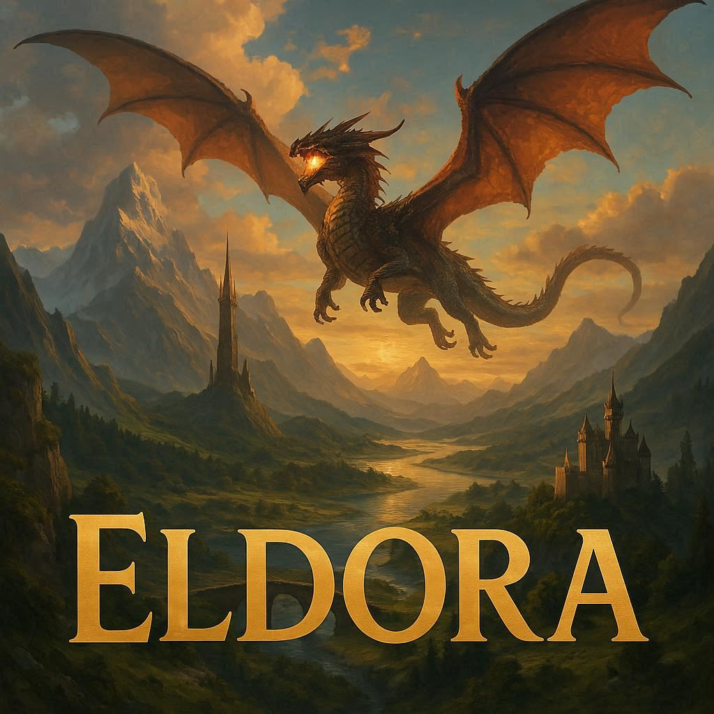
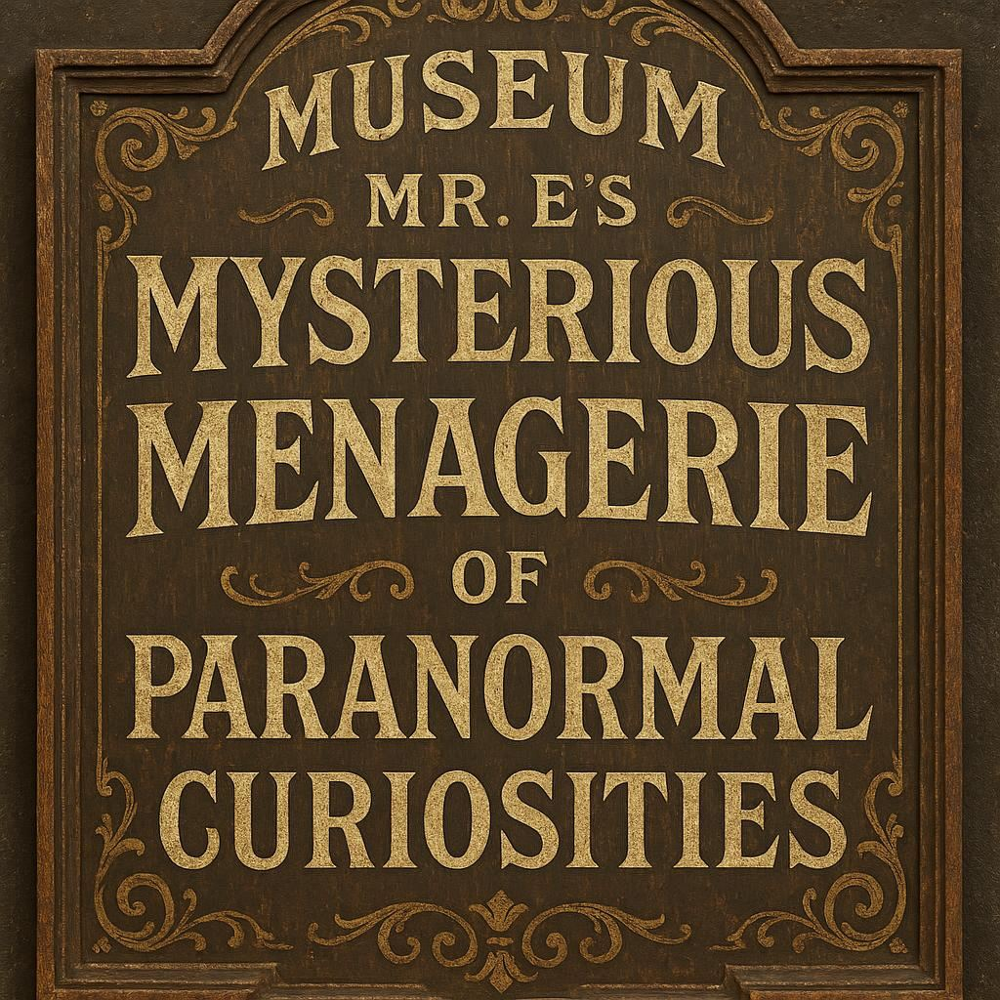
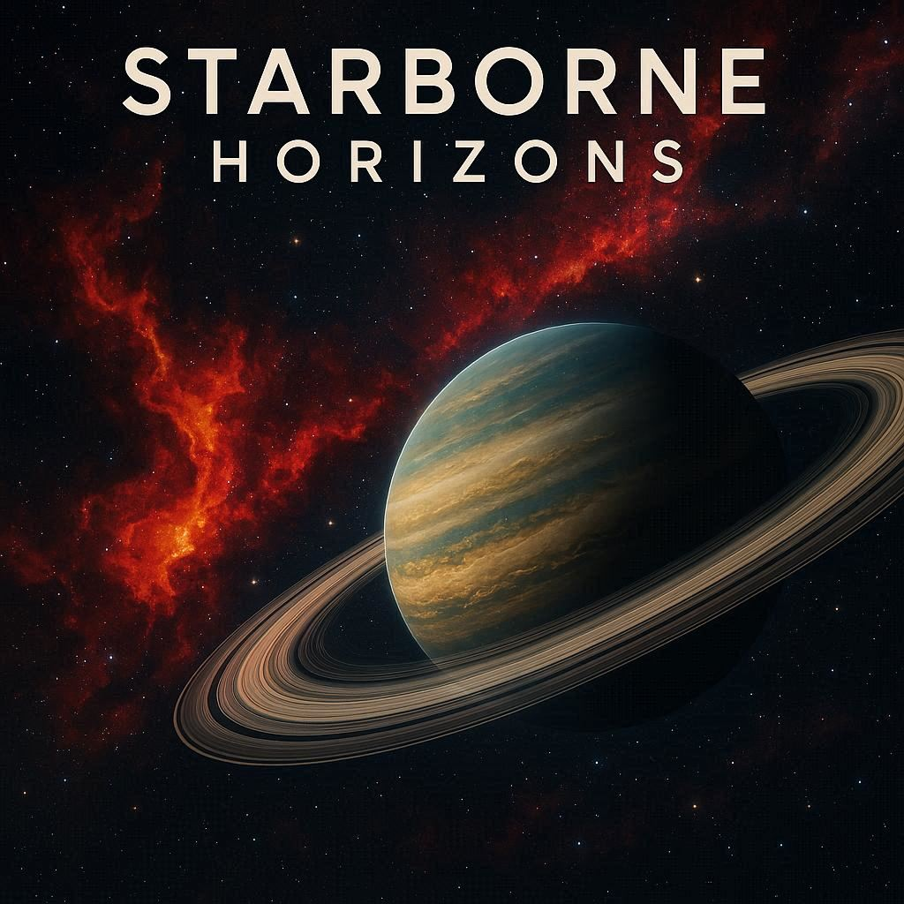
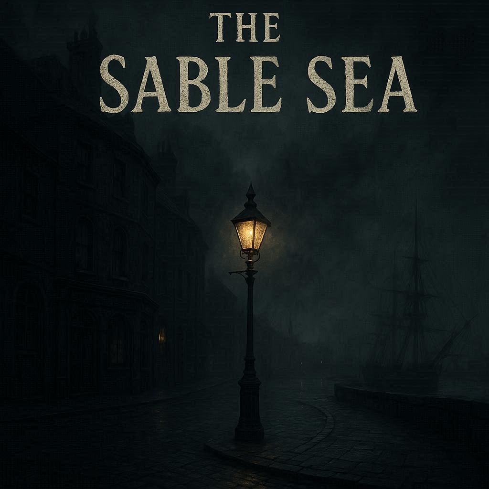

A great many stories begin in the Forest.
Where will your journey take you? Will you seek adventure in a fantasy realm of magic and mystery? Or will you explore the far reaches of space, where humanity has spread across the stars? Perhaps you'll uncover secrets in a small town filled with paranormal curiosities? The choice is yours, traveler. Choose your path wisely, for the Forest is vast and full of wonders.

Travel to the vast realm of Eldora, where Kings reign supreme, brave warriors battle the forces of evil, and the Elder Dragons keep watch over the lands.
Wander the streets of Starlight Springs, a sprawling metropolis where the supernatural and extraordinary thrive alongside the human population.

Explore the small town of Rockwell and discover the secrets of Mr. E's Mysterious Menagerie of Paranormal Curiosities.

Space is a vast frontier of order and chaos. Step into the light, or join the darkside.
The Great Flyu Empire rules the universe. Humanity has long since been conquored and Earth destroyed. Humans are now largly kept as pets. Will you be one? Or will you rebel?
